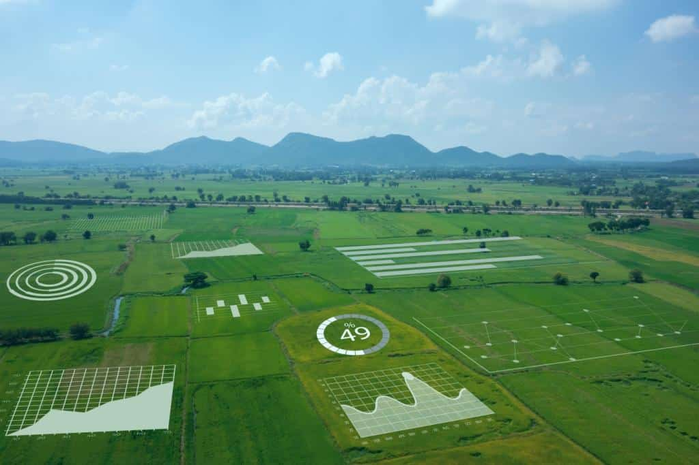

Atticus
Dia-a-Dia
No dia a dia, o ThinkFarm se torna um parceiro essencial para os agricultores. Os sensores de umidade e
luminosidade são instalados nas áreas de cultivo e fornecem dados em tempo real sobre as condições do solo e
a quantidade de luz disponível para as plantas. Essas informações são transmitidas para um sistema central
de coleta e análise de dados, onde são processadas e transformadas em insights acionáveis.
Com base
nesses
insights, os agricultores podem tomar decisões embasadas, como programar a irrigação de acordo com as
necessidades reais das plantas, ajustar a iluminação em cultivos em estufas, aplicar nutrientes de maneira
precisa e identificar problemas precocemente, como doenças ou deficiências nutricionais. Essas ações ajudam
a otimizar o crescimento das plantas, aumentar a eficiência no uso de recursos e maximizar a produção
agrícola. O ThinkFarm se integra perfeitamente à rotina diária dos agricultores, fornecendo informações
valiosas que impulsionam suas atividades e contribuem para uma agricultura mais inteligente e sustentável
